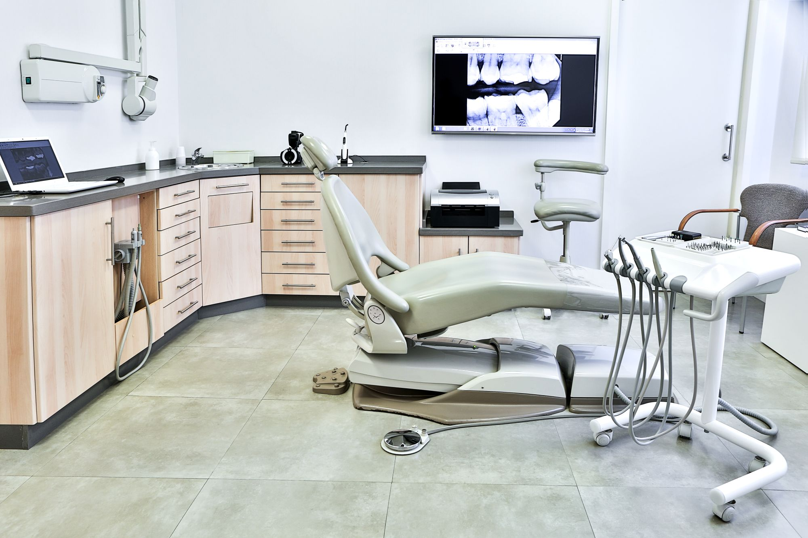

Our Mission
Our mission is to make dental care accessible, personalized and preventative, empowering every patient to take charge of their oral health. We strive to reduce missed appointments, improve treatment adherence and support long-term wellness with care that is both compassionate and effective. Guided by our promise to deliver the highest standard of dentistry for patients of all ages, our dedicated team ensures every individual receives the attention and respect they deserve with clarity, empathy and excellence at every step.
Our New Dental Technologies
Digital X-Rays
Our state-of-the-art digital X-ray system provides high-resolution images with significantly less radiation exposure compared to traditional X-rays. This technology allows for quicker and more accurate diagnoses, ensuring that we can address dental issues promptly and effectively.
Intraoral Cameras
Our intraoral cameras offer a detailed view of your mouth, allowing us to capture high-quality images of your teeth and gums. This technology enhances our ability to detect and diagnose dental problems early, and it also helps us to better explain treatment options to our patients.
Laser Dentistry
We have incorporated advanced laser technology into our practice, which allows for minimally invasive procedures with reduced pain and faster healing times. Laser dentistry is used for a variety of treatments, including gum disease therapy, cavity detection, and teeth whitening.
CAD/CAM Technology
Our CAD/CAM (Computer-Aided Design and Computer-Aided Manufacturing) system enables us to create precise and custom dental restorations, such as crowns, bridges, and veneers, in a single visit. This technology ensures a perfect fit and natural appearance, providing our patients with durable and aesthetically pleasing results.
3D Printing
We utilize 3D printing technology to create accurate dental models, surgical guides, and custom appliances. This innovation allows for more precise treatment planning and improved outcomes for our patients.
Teledentistry
Our teledentistry services provide convenient access to dental care from the comfort of your home. Through virtual consultations, we can assess your dental concerns, provide professional advice, and develop treatment plans without the need for an in-office visit.
Meet Our Team
Dr. Johanna Grey (DDS, Orthodontics)

Johanna embarked on her dental career after graduating from a distinguished institution. Her focus on orthodontic excellence has shaped her journey, bringing valuable experience to our team at 100SMILES Dental Care. Dr. Grey's dedication to providing top-tier orthodontic care is evident in her daily practice.
Dr Emily Carter (Pediatric Dentist)

Emily is a dedicated Pediatric Dentist at 100SMILES Dental Care. With a passion for children's dental health, Emily brings a wealth of knowledge and a gentle approach to her practice. Her commitment to providing a positive dental experience for young patients ensures that children receive the best care in a comforting environment.
Dr. Benedict Sloan (DMD)

Our seasoned dentist Ben, whose commitment to dental health and well-being shines through years of dedicated practice. His journey in dental science has been devoted to ensuring the overall well-being of patients. At 100SMILES Dental Care, Dr. Sloan's unwavering commitment to providing high-quality care stands as a cornerstone of our practice.
Richard Attam (BDS)

Richard is our skilled Dental Hygienist at 100SMILES Dental Care. With a deep understanding of oral care and a compassionate approach, Richard plays a crucial role in supporting our dentists and ensuring the well-being of your teeth during your visit.
April Kepner - Receptionist

April Kepner, our friendly Receptionist at 100SMILES Dental Care. With a warm smile and a passion for customer service, April is here to assist you with appointments, enquiries, and ensure that your experience at our clinic is as seamless and welcoming as possible.